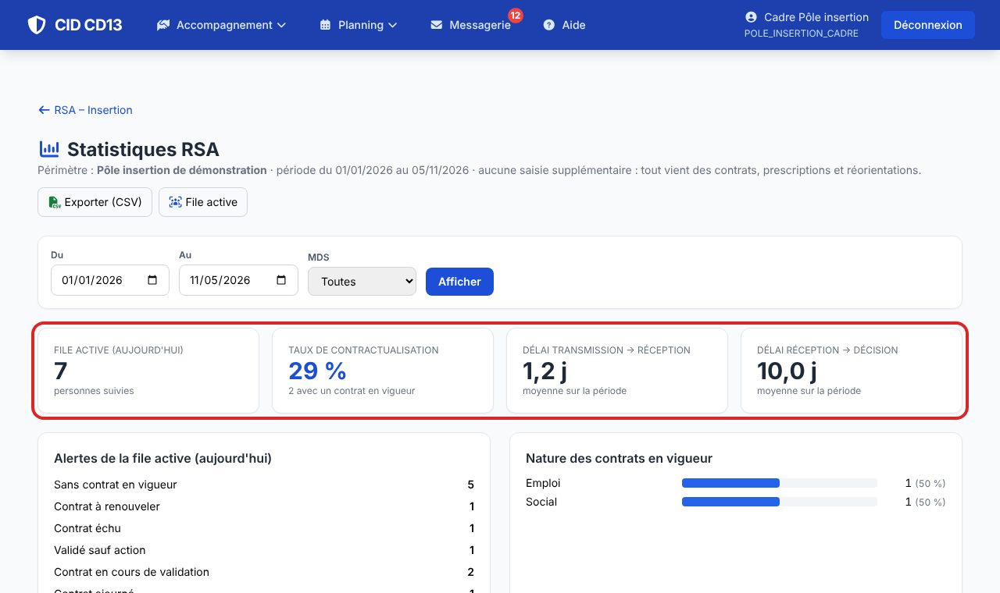
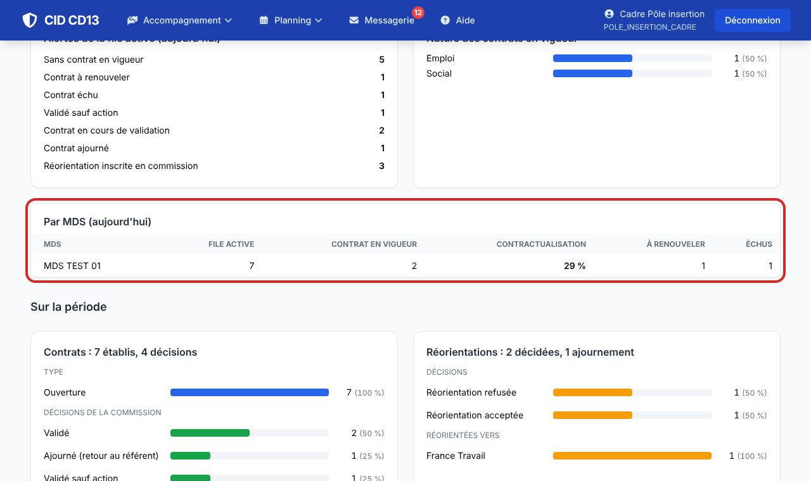
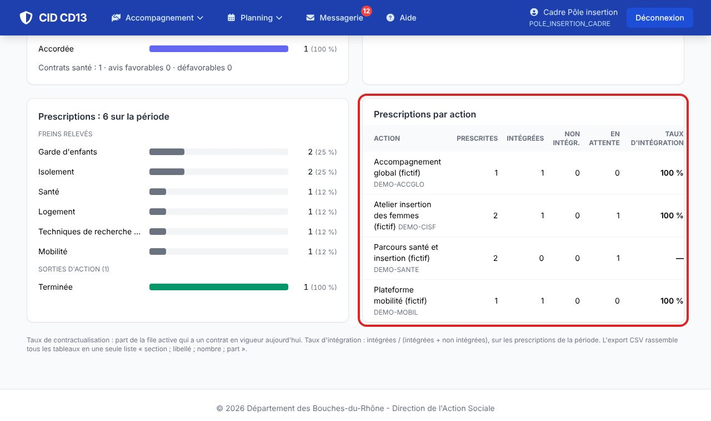
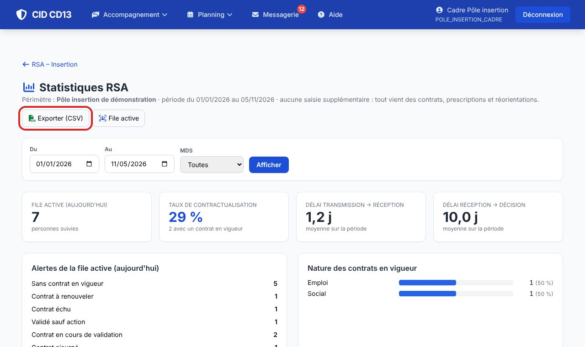

1Les indicateurs

- Taux de contractualisation : part de la file active qui a un contrat en vigueur aujourd'hui.
- Délais moyens : de la transmission à la réception par le pôle, puis de la réception à la décision.
- Choisissez la période (par défaut, depuis le 1er janvier) et, si besoin, une MDS.
2Par MDS et par action


- Pour le pôle et le département : file active, contrats en vigueur, contractualisation, renouvellements et échus par MDS.
- Par action : prescriptions, intégrations, non-intégrations et taux d'intégration ; freins relevés et sorties d'action ; décisions de la commission, aide aux transports, contrats santé ; réorientations décidées et vers qui.
3Exporter

- Exporter (CSV) rassemble tous les tableaux en une liste « section ; libellé ; nombre ; part », facile à retravailler dans un tableur.
Bon à savoir
- Les alertes cliquables renvoient vers la file active filtrée.
Cliquez sur une image pour l'agrandir. Le cadre rouge montre où cliquer ou quoi remplir. Toutes les données affichées sont fictives.